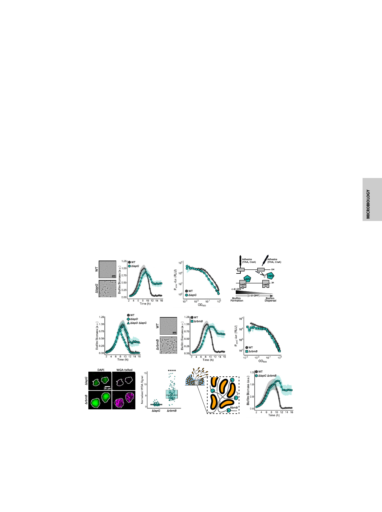

mechanism; in the absence of LapG, FrhA and CraA remain
intact, and V. cholerae cells cannot properly exit the biofilm state.
To verify that the established c-di-GMP–dependent regulatory
mechanism controls LapG activity in our assay, we deleted lapD
(Fig. 3C). Indeed, in the ΔlapD strain, biofilm dispersal occurred
prematurely, indicating that without LapD, LapG is not se-
questered, and unchecked LapG activity promotes premature
adhesin degradation and, consequently, early biofilm disassembly
(Fig. 3D). The ΔlapD ΔlapG double mutant had the same dispersal
phenotype as the ΔlapG single mutant, confirming that LapG
functions downstream of LapD (Fig. 3D). Finally, in a reciprocal
arrangement, overexpression of lapG from an ectopic locus caused
S3A) suggesting that enhanced LapG-mediated cleavage of adhe-
sins prematurely released cells from the biofilm. Thus, the con-
served Lap pathway, which responds to changes in c-di-GMP level,
facilitates biofilm dispersal in V. cholerae.
Regarding the RbmB polysaccharide lyase, the ΔrbmB strain
formed biofilms to roughly the same peak biomass as WT;
however, it exhibited a 2-h delay in dispersal onset, and most of
its biomass (∼70%) remained at 16 h (Fig. 3E and Table 1). The
level of vpsL-lux expression in the ΔrbmB mutant was similar to
that in the WT, showing that the RbmB dispersal function does
not concern production of VPS (Fig. 3F). Complementation with
inducible rbmB expressed from an ectopic locus in the ΔrbmB
strain caused an ∼40% reduction in peak biofilm formation,
confirming that RbmB negatively regulates biofilm formation.
However, the complemented strain retained a modest biofilm
dispersal defect, suggesting that the timing or level of rbmB ex-
To verify that the ΔrbmB dispersal defect stems from the lack
of vps degradation, we grew ΔrbmB biofilms for 16 h (i.e., post-
WT biofilm dispersal completion), and subsequently fixed and
stained the nondispersed biofilms with wheat germ agglutinin
conjugated to Texas Red (WGA-txRed), which binds to
N-acetylglucosamine sugars in the VPS matrix (30). We used the
ΔlapG mutant as our control, since its biofilm dispersal pheno-
type should not involve changes in VPS. On average, the ΔrbmB
mutant exhibited approximately sixfold more WGA-txRed signal
than the ΔlapG mutant (Fig. 3G).
Collectively, our results show that the nondispersed ΔlapG
biofilms contain little VPS, consistent with possession of func-
tional RbmB, while nondispersed ΔrbmB biofilms contain excess
VPS due to the lack of RbmB-mediated polysaccharide diges-
tion. Thus, we suggest that RbmB-directed VPS disassembly is
critical for proper biofilm disassembly (Fig. 3H).
Our results indicate that LapG and RbmB function in differ-
ent pathways to drive biofilm disassembly. To examine their
combined effects, we constructed the ΔlapG ΔrbmB double
mutant and measured its biofilm lifecycle (Fig. 3I). The ΔlapG
ΔrbmB double mutant mimicked the single ΔrbmB mutant
(Fig. 3E) in its biofilm dispersal defect. Thus, the ΔlapG and
ΔrbmB defects are not additive. Presumably, the severe dispersal
defect displayed by the ΔrbmB single mutant, which cannot di-
gest matrix polysaccharides, is not made more extreme by ad-
ditional impairment of matrix protein degradation, suggesting
that cells are already maximally trapped by the undigested
polysaccharides. It is also possible that an additional factor not
identified in the screen exists that is responsible for enabling the
ΔlapG ΔrbmB double mutant to exhibit some biofilm dispersal
(∼67% of peak biomass remained at 16 h). Alternatively, the
subpopulation of cells that successfully dispersed from ΔlapG
A
B
C
D
E
F
G
H
I
Fig. 3. Matrix-digesting enzymes mediate V. cholerae biofilm dispersal. (A) Representative 16 h images and quantitation of biofilm biomass over time
measured by time-lapse microscopy for WT V. cholerae and the ΔlapG mutant. (B) The corresponding PvpsL-lux output for strains and growth conditions in A
over the growth curve. (C) Schematic representing the LapG mechanism. (D) As in A for the WT, the ΔlapD single mutant, and the ΔlapD ΔlapG double
mutant. (E) As in A for the WT and the ΔrbmB mutant. (F) As in B for the WT and the ΔrbmB mutant. (G) Representative images and quantitation of WGA-
txRed signal in ΔlapG and ΔrbmB biofilms at 16 h postinoculation. To account for differences in biomass, the WGA-txRed signal was divided by the DAPI signal
in each biofilm. Values were normalized to the mean signal for the ΔlapG strain. More than 100 individual biofilms were quantified for each strain. An
unpaired t test was performed for statistical analysis. ****P < 0.0001. (H) Proposed model for the role of RbmB in biofilm dispersal. Gray lines represent the
polysaccharide matrix. (I) As in A for the WT and the ΔlapG ΔrbmB double mutant. In all cases, n = 3 biological replicates and n = 3 technical replicates, ± SD
(shaded). For vpsL-lux measurements, n = 3 biological replicates, ± SD (shaded).
Bridges et al.
PNAS | December 22, 2020 | vol. 117 | no. 51 | 32643